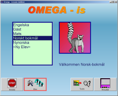
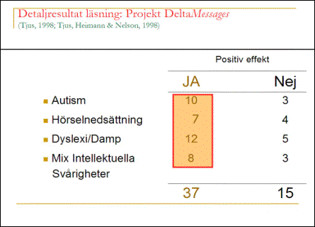

(1) Skapa:
Text  Animerad händelse
Animerad händelse
(2) Testa:
Animerad händelse
 Text
Text
Figur 2: Programmets uppbyggnad
Omega-IS projektgrupp
Mikael Heimann, Mats Lundälv, Tomas Tjus & Keith E. Nelson
Omega - interaktiv språklek
Manual - lektionsdel
Omega- is
version 1.2
ã Heimann, Lundälv, Tjus & Nelson, 2004-2006
Topic Dos Hb, Meloton Hb, Tomas Tjus Psykologbyrå & SuperImpact Images Inc.
Utvecklat i samarbete med Regionsenter for barn og unges psykiske helse – Helseregion Vest, Bergen; Psykologiska institutionen, Göteborgs universitet; DART, Sahlgrenska universitetssjukhuset, Göteborg; samt Department of Psychology, Penn State University, USA
Hur börjar man och vad är lämplig nivå?... 4
Exempel på hur man kan arbeta med Omega-is... 13
Hantera elever och elevinställningar... 16
Kapitel G: Pedagogiskt förhållningssätt... 69
MIR – något om vår metod... 69
Språkutveckling och samspel... 70
S.T.A.R.T – faktorerna: Lite mer teori... 72
Omforming (”recasting”) – hur gör man?... 75
Omega-is är konstruerat för att stimulera språk- och kommunikationsutveckling hos elever som är i färd med att upptäcka skriftspråkets mysterier. Vad står bokstäverna för? Hur kan dessa representera ord och händelser? Programmets språkmaterial är avsett att utforskas av eleven med stöd av, och i samspel med, lärare eller förälder. Det språkliga materialet med tillhörande animeringar erbjuder inte enbart motiverande lästräning utan även samtalsmöjligheter där elevens fantasi och tankar kan komma till uttryck.
Programmet består av två huvuddelar (se figur 1). En lektionsdel med ett befintligt språk- och textmaterial där eleven kan skapa händelser med hjälp av textknappar. Dessutom kan eleven testa sin förmåga genom att se händelsen först, och därefter välja ord och skapa den mening som bäst återger vad han/hon just sett.
Figur 1: Lektionsdelens innehåll
I editeringsdelen kan den vuxne redigera befintligt material, eller skapa helt nytt material i syfte att uppnå en så anpassad och motivationsskapande situation som möjligt för eleven.
Uppbyggnaden av multimediamaterialet är gjort enligt följande struktur (se figur 2). Det språkliga innehållet representeras av text, och efter att eleven klickat på ordet får eleven höra det uppläst. Färdig mening (eller enskilt ord vid 1-ordsövningar) visas som en animerad händelse. Därigenom får eleven – inom ett begränsat tidsfönster - stöd i tre olika former (text, tal, animering) vilket underlättar förståelsen för språklig representation.
Text
(2) Testa:
Animerad händelse
Figur
2: Programmets uppbyggnad
(1) Skapa: Animerad händelse
Animerad händelse Text
Text
Efter att programmet startas skrivs elevens namn in i namnlistan. Därefter kan eleven börja utforska språkmaterialet i Skapa, eller pröva sin läsförståelse i Testa.
Omega-is § Innehåller
ett omfattande färdigt språkmaterial: § 29
grundlektioner med runt 200 ord (plus 3 berättelser och 16
demo-lektioner) § tillräckligt
med material för att skapa 1936 meningar (plus innehållet
i berättelser och demo-lektioner) § vanligaste
nivån är 3-ord s-v-o-meningar § mest
avancerade nivån är långa meningar och korta
berättelser § har
en öppen arkitektur § dvs
möjlighet att lägga in eget nytt språk- och
mediamaterial efterhand § sådant
ytterligare innehåll kommer att erbjudas av utvecklarna (via
Omega-is webbsidor www.omega-is.com),
men kan också läggas in av lärare eller föräldrar
Hur mycket har jag lärt mig och hur mycket kunde jag innan? Detta kan testas i programmets Förtest. Det betyder att en elev själv kan se hur mycket han eller hon kan innan man börjar arbete med lektionen. Men det ger också den vuxne som arbetar tillsammans med eleven en möjlighet att få reda på vilken nivå som är bäst att börja på. En tumregel här är att använda 20 % korrekt som ett utgångsläge då eleven bör kunna en del redan innan, men dessutom få en utmaning att lära sig något nytt. Procentsiffran ska dock ses som ett grovt mått då våra erfarenheter är att vissa elever ibland kan väldigt lite vid Förtest (<20 %) men ändå lär sig lektionens innehåll. Det är viktigt att hitta en balans mellan elevens glädje i att utforska materialet och materialets svårighetsgrad (om det är för svårt leder det kanske mest till frustration).
Den centrala delen i programmet är Skapa för utforskande av programmet där eleven på ett lekfullt sätt kan bekanta sig med text och vad man kan använda språket till. Språkmaterialets innehåll:
Här finns enbart ett-ordsmaterial. Tanken bakom detta är här att eleven ska förstå hur texten representerar ett konkret föremål dvs. enbart substantiv är representerade. Dessutom gör den enkla strukturen att de elever som har svårt att hantera datorn motoriskt kan få en inblick i hur man går tillväga för att illustrera text genom enbart en musklickning/markering. Orden är delvis valda för att tvinga fram en fonologisk (ljudmässig) och/eller ortografisk (bildmässig) särskiljning (t ex där vissa ord liknar varandra mycket som. "Hunden, Huset").
Dessa består av två-ordsmeningar med ett substantiv och ett verb för att illustrera att någon gör något och hur enkel grammatik byggs upp med ett subjekt och predikat.
3-ordsmeningar med subjekt, predikat och objekt. Vissa ord som ingått i tidigare lektioner återkommer, men nya ord finns för ytterligare fonologisk träning. Orden är placerade ibland enligt bestämd grammatisk form där subjekt-predikat-objekt har givna kolumner men ibland även med enbart substantiv i en kolumn och verb i en annan. Dock får alltid den valda meningen en korrekt grammatisk struktur.
Här finns de vanligaste prepositionerna representerade för att eleven ska kunna utforska lägesbestämning. Dessutom tränas genitivformen i vissa lektioner genom att eleven får utforska meningar med ägandeinnehåll (”- pandans bord”)
Här finns långa meningar där nya ord tillkommer. Syftet är att eleven ska träna läsning kombinerat med att arbetsminnet prövas, vilket är viktigt vid läsning och förståelse av längre text. Detta kan ju även prövas i testdelen om eleven tycker det är skoj med den typen av utmaning.
Via olika alternativ kan eleven skapa sin egen berättelse med olika slags huvudaktörer, val av scenarios t.ex. var ska handlingarna utspelas, vad letar huvudpersonen efter, vem kan hjälpa till? Här är avsikten att ge eleven en förståelse för hur berättelser byggs upp och till stimulering av eget skapande genom att skriva eget när inte programmet används. Dessutom får man se sin egen skapade berättelse spelas upp i sin helhet som en sammanhängande film!
Sätt in CD-skivan. Under Windows startar installationen normalt automatiskt. Om inte; leta rätt på CD-enheten på systemet (”Den här datorn”) och öppna den. Leta rätt på och starta filen “Omega-is-1-2-Win-install.exe”. Installationer för operativsystemen Windows (-98 eller senare) och Linux/Unix finns tillgängliga på CDn, liksom en version för MacOS-X.
Följ instruktionerna på skärmen när installationen har startat. Bl.a. får du välja vilka språk som skall stödjas.
OBS att detta är en ganska omfattande installation som kräver en del tid! Räkna med 5 – 10 minuter för installationen.
Programmet kräver närmare 180 MB ledigt utrymme på hårddisken med ett språk installerat. Varje ytterligare språk kräver 10 - 15 MB i tillägg.
Datorn bör minst
vara av typ Pentium 3, 600 MHz, med 256 MB RAM-minne.
Pentium 4,
>800 MHz och 512 MB RAM-minne rekommenderas.
Efter avslutad installation återfinns tre ikoner (plus ytterligare en mapp) i startmenyn:

Ikonerna återspeglar det faktum att Omega-is egentligen består av tre olika program. Två av dessa (Animation Editor och Lesson Editor) ger möjlighet att själv redigera och utveckla programmet. Man kan t ex ändra på befintliga lektioner eller skapa helt nya. Mer om detta finns längre fram i manualen (samt på vår webbsida: www.omega-is.com ).
Ikon nummer tre – Omega-is – utgör det egentliga programmet, det som ger möjlighet för en elev att på ett lekfullt sätt utforska språket, och som ger dig som är lärare eller förälder ett nytt pedagogiskt redskap.
Omega-is finns f.n. med gränssnittet i tre språkversioner (svensk, norsk och engelsk), och med lektionsmaterial i fyra språkversioner (svensk, norsk bokmål, nynorsk och engelsk). När programmet startas från någon av de tre startikonerna väljs den språkversion som stämmer med systemets inställningar – om den finns – annars väljs den engelska versionen. En valfri språkversion kan köras via någon av genvägarna i mappen ”Language Specific Shortcuts”. De lektionsspråk som är installerade kan köras från alla gränssnittsspråk, d.v.s. att lektionerna kan köras på exempelvis engelska i den svenska gränssnittsversionen, om engelska tagits med i installationen.
|
En snabbstart: · Dubbelklicka på Omega ikonen. · Välj ”Gäst” · Välj ”Skapa” eller ”Testa” · Välj lektion
|
|
När programmet startar hamnar man direkt i elevläge som ger eleven möjlighet att enkelt börja undersöka programmets innehåll (Skapa) eller testa sin egen förståelse (Testa). Kör man som ”Gäst” så sparas det man gör inte i en elevspecifik elevs resultatmapp utan i gästens/gästernas gemensamma.
Skapa ger möjlighet att undersöka språket på ett lekfullt sätt alltifrån enstaka ord (B-lektioner) till korta berättelser (L-lektioner). I detta läge väljer man först språkligt material som därefter återges i text, ljud och som animation. Eleven skapar animationer som stimulerar språkförståelsen och som motiverar till samtal och utveckling.
Testa: Väljer man istället Testa får man möjlighet att på ett lekfullt sätt undersöka sin språkförmåga. Nu visas animationen först och därefter skall eleven välja de ord eller den mening som bäst beskriver det han eller hon just fick se. (Se kapitel B)
Test kan köras i två lägen: Dels i elevläge där man kan testa sin läsförståelse – oftast efter att motsvarande ord och meningar först utforskats i Skapa-läget. Dels kan test köras under mer kontrollerade former i lärarläge, med ord tillagda med syftet att utmana elevens läsförståelse ytterligare. (Till lärarläge och inställningar kommer man genom kommandot Ctrl+F2 eller Shift+F2).
I båda fallen lagras resultaten automatiskt i resultatfiler för varje elev. För många elever kan det vara skoj att utmana sig själv genom att göra samma test för att se om man kan få fler rätt än förra gången, eller om man lyckas svara ännu snabbare men behålla samma antal rätta svar: (Mer om test och resultat i kapitel C: Test.)
Våra erfarenheter visar att elever lär sig mest om det finns en vuxen till hands som kan ge positivt stöd då det behövs, men även som diskussionspartner när eleven vill prata om det som eleven upplever. Det är dock viktigt att det är eleven som ska ha initiativet vid utforskandet av språkmaterialet, elevens egen nyfikenhet och lust ska vara drivkraften! (Se vidare kapitel G )
Programmet styrs antingen via mus eller via tangentbord (t ex mellanslag och enter). Detta skapar möjlighet till ytterligare anpassning för elever som har behov av 1- eller 2-kontaktsstyrning.
Målet med Omega-is har varit att skapa ett multimediabaserat dataverktyg som sätter eleven i förarsätet med möjlighet att på ett lekfullt sätt utforska språket. Detta utgör själva grundidén. Eleven ges möjlighet att undersöka allt från enstaka ord, meningar av varierande längd, till korta berättelser. Detta språkliga material återges i text, ljud och som animationer. Eleven skapar själv illustrerade meningar som stimulerar språkförståelsen och motiverar till vidare samtal och utveckling.
Val av svårighetsnivå (B, D, F, H, J eller L-lektioner) görs genom att klicka på en djurikon
Om man vill lägga till en elev eller ändra programmets grundinställningar måste man först gå till programmets lärarläge genom kommandot Ctrl+F2 (se figur nedan). I detta läge kommer man åt programmets inställningsfunktioner, särskilda lärartest samt testresultat (se vidare kapitel C). För att registrera ny elev välj <Ny Elev> – se bild (1) nedan – och skriv in elevens namn. Därefter kommer man till en ny dialogruta som ger möjlighet till vidare inställningar - se bild (2) nedan.
|
(1) |
|
|
(2) |
|
Animation och Feedback ger möjlighet att välja hastighet på, och ev. upprepning av, animationerna, samt justera feedback vid testövningar. Mer därom i kapitel C.
Språk: Här kan man välja det språk eleven skall arbeta med. Vilka val man har här beror på vilka språk som installerats (tillgängliga val på installations-CDn är engelska (brittisk), svenska samt norska (bokmål, eller nynorsk)).
Färger & Styrning: Här går det att ställa in färgsättning och kontrast på knappar, text, bakgrund och skärmbild. Det betyder att varje elev kan få ett eget utseende på programmet. Dessutom har man här möjlighet att ställa in detaljer för styrning via tangentbord – normalt Blanksteg/Mellanslag för att stega, och Enter för att välja.
Admin: Här kan man länka in en bild på eleven. Denna bild visas därefter varje gång som eleven börjar arbeta med programmet. Under ”Admin” har man även möjlighet att radera inlagda elever och elevinställningar (lagrade elevdata måste raderas manuellt via filsystemet).
Efter avslutad registrering och eventuella justeringar av inställningarna kan eleven börja skapa egna meningar. Använd återigen kommando Ctrl+F2 för att komma tillbaks till elevläge och välj skapa meningar.
Programmet innehåller ett stort antal färdiga lektioner som ger möjlighet att låta eleven undersöka språk och skriven text utifrån de egna förutsättningarna.
B-lektionerna utgör den första och den enklaste nivån. Här undersöks enbart enskilda ord, dvs att eleven genom att klicka på ordbilden, får se ordet i text, får höra det sägas samt se ordet visualiserat. Det finns fyra färdiga B-lektioner som tillsammans innehåller 29 unika ord.
|
|
|
|
De fyra B-lektioner som ingår |
Ord som ingåt i lektion B1 |
D-lektioner. Här kan man kombinera ihop två ord, en aktör plus en händelse/ett objekt. Exempel på händelser som kan skapas är ”Flickan gungar” eller ”Ekorren dansar”. Tre lektioner ingår (D1, D2 och D3) som totalt ger möjlighet att skapa 81 olika meningar/händelser.
F-lektioner. F-nivån ger möjlighet att skriva treordsmeningar bestående av en aktör/subjekt, ett verb och ett objekt (s-v-o). De första innehåller bara två substantiv och ett verb vilket ger möjlighet att lära sig hur nivån fungerar utan alltför många störande alternativ. Sammanlagt ingår 12 olika F-lektioner som tillsammans ger möjlighet att skapa 205 olika språkliga händelser.
H-lektioner. H-nivån innehåller fem lektioner där bl a prepositioner och positionsbestämning kan tränas. Nivån omfattar även undersökande av riktningsbestämning som t ex ”tittar ut från”, ”tittar in genom” och ”hoppar ut ur”. Även genitiv tränas i några av H-lektionerna genom att eleven får utforska meningar med ägandeinnehåll (t ex ”pandans bord”). Meningarna är nu betydligt längre och mer komplexa, och de ställer avsevärt större krav på elevens språkförmåga, motivation och arbetsminne. På H-nivån kan totalt 951 meningar/händelser skapas.
J-lektioner. J-nivån innehåller fem lektioner där bl a adjektiv och konjunktioner ingår. Nu är meningarna uppdelade i textknappar (se figur nedan) som ger många kombinationsmöjligheter och eleven närmar sig alltmer det ”vanliga” skrivandet. Syftet är att träna förmågan att utforska större språkmaterial som förhoppningsvis leder fram till att skapa berättelser (L-lektioner). Vidare ges eleven här möjlighet att arbeta med meningar där aktörerna både uttrycker och visar känslor (”den glada” och ”den rädda”). J-lektionerna innebär en än större träning av arbetsminnet pga den större informationsmängden som måste bearbetas. Totalt kan 699 meningar/händelser skapas av de olika J-lektionerna.
Exempel på komplexa meningar från J-nivån (J3)
L-lektioner. På denna nivå finns två lektioner där eleven kan skapa en längre berättelse genom att kombinera meningar. I meningarna finns möjlighet att bestämma vem som ska vara huvudaktör, vad den ska göra och i vilket sammanhang. Eleven kan då utforma olika versioner av samma grundberättelse. Syftet är att stimulera elevens fantasi för att skapa egna berättelser! Den berättelse som skapats kan läsas upp och/eller spelas upp igen, samt skrivas ut. Den kan också sparas för senare upprepning.
I sin nuvarande utformning ger Omega-is möjlighet att arbeta med fyra olika språk: svenska, norska (bokmål och nynorsk) samt brittisk engelska. Dessa fyra kan installeras enskilt eller tillsammans. Om fler än ett språk installeras, väljs språk i inställningsmenyn (kommando Ctrl+F2 lärarläge). Dessa inställningar görs per elev. Man kan således låta en elev arbeta med Omega-is-övningar i både en svensk och en engelsk version.
Totalt innehåller grundmaterialet i lektion B1 till J5 147 unika ord. Utöver detta tillkommer de ord som ingår i berättelserna på L-nivån samt i de bifogade demo-lektionerna. Mer specifikt innehåller programmet 33 olika verb, 81 substantiv, 14 prepositioner (t ex bakom, bredvid, över, på, under, framför, genom samt i), 12 adjektiv (t ex blond, rödhårig och liten), 2 adverb (långsam och snabb), en konjunktion (och), två bestämda artiklar (den, det), ett pronomen (sig) samt en obestämd artikel (en).
Språkmaterialet ger möjlighet att sammanlagt skapa 1936 meningar/händelser förutom vad L-nivån och demolektionerna ger möjlighet till.
Låt oss utgå från följande scenario: En elev – Jan – med autismspektrumstörning skall pröva programmet. Jan har visat intresse för ord och hans lärare bedömer att Omega-is kan vara en väg värd att pröva. Jans språkliga ålder bedöms vara ca 5-6 år.
Steg för att komma igång:
1. Starta programmet
2. Kommando Ctrl+F2 för att komma till inställningar/lärarläge
3. Välj <Ny Elev> och skriv in elevens namn. Därefter kan man välja:
· Animation: Välj om animationen skall repeteras, om avslutad mening skall markeras med ett ljud samt ställ in animeringashastighet
· Feedback: För testdelen kan typ av feedback ställas in när eleven svarar rätt eller fel. Återkoppling kan ges i form av ljud, text, animationer eller filmsnuttar. Här kan man också ställa in hur ofta feedback skall ges.
· Språk: Välj språk (svenska, norsk bokmål, nynorsk eller brittisk engelska) beroende på vad som installerats.
· Färger & Styrning. Här kan man justera färgsättningen och på så sätt skapa en känsla av en unik miljö för varje enskild elev. Man kan även ställa in detaljer för styrning via tangentbord – normalt Blanksteg/Mellanslag för att stega, och Enter för att välja.
· Admin. Här kan läraren länka till en bild av eleven alternativt att radera inlagda elever och elevinställningar.
4. Efter avslutade inställningar är man tillbaks i lärarläge. Nu kan man välja test eller gå direkt till lektionsdelen. För Jans del valde läraren att stanna kavar i lärarläget och testa på tvåordsnivån (D-lektioner). Klicka på Test och välj ett förtest (pretest).
5. Jan genomför pretest 1 för lektion D1. Resultatet blev två rätta meningar av 9 (22,2 % rätt vilket också loggas i resultatfilen som man kommer åt via knappen Resultat).
6. Det är nu dags för Jan att själv få prova programmet. Genom kommandot Ctrl+F2 kommer man tillbaks till elevläget.
· (Notera att även här finns testmöjligheter. Test i lektiondelen slumpas medan test i lärarläge enbart innehåller ett förutbestämt antal meningar. Eftertesten i lärarläge – dvs posttests – innehåller även s k ”dummyord”, dvs ord som är fonologiskt eller semantiskt lika de ord som testas).
7. Jan får arbeta med D-lektionerna.
8. Efter att Jan arbetat sig igenom samtliga tre D-lektioner och även prövat de test som finns i lektionsdelen väljer läraren att åter testa Jan med de förutbestämda testen. Genom Ctrl+F2 ät man nu tillbaka i lärarläge.
Jan genomför posttest 1 (eftertest 1) och får nu 80 % korrekt. Därefter avslutas programmet
Testfunktionen i Omega ger möjlighet att pröva hur mycket ett barn förstår av språkmaterialet i en given lektion. Animeringen visas först och eleven ska genom att klicka på textknapparna skapa en mening som återger vad som hände. Testen kan köras i två lägen, dels i ett lärarläge och dels i ett mera fritt elevläge. I lärarläget är innehållet fördefinierat, medan testen i elevläget genereras slumpmässigt. Dessutom finns i lärarläget både för- och eftertest för att mäta och analysera effekter på språk- och läsförståelsen, efter det att språkmaterialet har utforskats
Här kan eleven i lekfull form utmana sin förmåga att uttrycka/återskapa animerade scener i text. Genom att observera elevens resultat i dessa övningar kan läraren också få en uppfattning om vilken nivå som är lämplig för eleven att arbeta med. I testen i elevläge finns exakt samma språkmaterial som i Skapa-lektionerna, och övningarna slumpas fram ur respektive lektion. Om eleven inte klarar mer än ca 20-30 % av meningarna ger det en vink om att materialet i lektionen kan vara meningsfullt att undersöka (se även sidan 2). Detta tips grundas på våra erfarenheter men det slutliga avgörandet kan bara tas av den lärare/förälder som känner eleven då elevers behov av trygghet och utmaningar varierar stort.
”Resultaten” av Test-övningarna (liksom i aktiviteterna i Skapa-övningarna) lagras och kan senare analyseras av en lärare. Se mer om resultathantering, och om test i lärarläge i avsnittet nedan!
För att komma till test i lärarläge, tryck Ctrl+F2. Klicka därefter på Testa. I lärarläge finns möjlighet att göra två förtest och två eftertest. Dessa test innehåller mer detaljerad information avseende elevens resultat jämfört med testen i elevläge. Dessutom finns här alternativa ord inlagda som ska utmana elevens läsförståelse både semantiskt (innehållsmässigt lika som t.e.x. ’bil/buss’) och fonologiskt (ljudmässigt lika t.ex. ’bi/bil’).
Innan ett test i lärarläge inleds måste man registrera elevens namn samt göra nödvändiga inställningar (se nästa avsnitt)
I det s.k. lärarläget (kommando Ctrl+F2) kommer man åt programmets inställningsfunktioner, lärartest samt testresultat. Här kan man lägga till en elev eller ändra de grundinställningar som ingår i programmet (se även kapitel B). För att registrera ny elev välj (1) <Ny Elev> och skriv in elevens namn. Därefter kommer man till en ny dialogruta (2).
|
(1) |
|
|
(2) |
Animation ger möjlighet att välja animeringshastighet genom att klicka på skjutreglaget (långsam-normal-snabb). Dessutom kan val göras om animeringen ska visas två gånger, om en ljudsignal ska höras före och efter animering samt efter fullbordad mening. Slutligen kan man ställa in om meningen ska visas i text efter animering för ytterligare förstärkning av animeringens innehåll.
Feedback. Vid testning av läsförståelse kan olika former av feedback (återkoppling) väljas avseende korrekta respektive felaktiga svar. Återkoppling kan fås som text, ljud, bilder och filmsekvenser. Val av vilka av medföljande filmer, bilder och ljud som ska visas/spelas kan göras. Slutligen kan frekvens av återkoppling ställas in med hjälp av skjutreglaget.
Genom ”Välj…”- knapparna kan man även komma åt egna filer. Det innebär att man kan använda unika ljud, bilder eller filmsekvenser som feedback – ytterligare en möjlighet till individanpassning.
Språk: Här väljs det språk eleven skall arbeta med. Vilka val man har här beror på vilka språk som installerats (tillgängliga val på installations CDn för Omega-is 1.0 är: engelska (brittisk), svenska samt norskt bokmål och nynorsk.
Färger & Styrning: Här går det att ställa in färg/kontrast/utseende på knappar, text och bakgrund i de olika skärmbilderna. Det betyder att varje elev kan få ett eget utseende på programmet.
|
|
|
|
|
|
Färgtema - Grundtema |
Tema 1 (option 1) |
Tema 2 (option2) |
Tema 3 (option 3) |
|
|
 |
|
|
|
Tema 4 (option 4) |
Tema 5 (option 5) |
Tema 6 (option 6) |
Ex eget tema (user defined) |
Bilderna ovan ger exempel på grundinställngar (”Färgtema”) som kan väljas samt hur en egendefinerad färgsättning kan se ut. För att ändra på färginställningarna finns fyra olika inställningsmöjligheter under ”Ändra färg”. Här kan man justera utseendet vid start, val av lektion samt vid skapande av mening och berättelser etc.
Under Färger & Styrning kan man slutligen ställa in användandet av Blankstegs-(mellanslags-)tangenten. Två alternativ finns: ”välj nästa” eller ”aktivera valda”. Det första alternativet innebär att ”Tab” och ”Blanksteg” stegar, och ”Enter” aktiverar, det andra att ”Tab” stegar, och ”Blanksteg” och ”Enter” aktiverar
Admin: Här kan man länka in en bild på eleven (”Välj elevbild…”). OBS - bilden skall vara i JPG-format! Därefter visas bilden varje gång som eleven loggar in och börjar arbeta med programmet. Under ”Admin” har man även möjlighet ta bort (radera) en registrerad elev.
Efter avslutad registrering och eventuella justeringar av inställningarna kan eleven börja skapa egna meningar.. Använd återigen kommando Ctrl+F2 för att komma tillbaks till elevläge och skapa meningar.
Om den vuxne vill studera elevens resultat går detta att göra via det så kallade lärarläget: Tryck Ctrl+F2 från startmenyn. Klicka därefter på knappen Resultat. Det som visas först är en översikt över de test den aktuella eleven har gjort med en hel del information om vilka slags test det var, hur lång tid de tog, svarstid m.m. (se bild nedan).
Resultat: Nivå 1för test
Vill man ha ännu mer detaljerad information (t ex avseende typ av grammatiskt fel som eleven gör) klickar man på knappen ”Detaljer”. Förutom procentsiffror för antal korrekta ord och meningar visas exakt vilka meningar som testades och barnens svar – se bild nedan. Vi kan av bilden utläsa att eleven gör helt rätt på de två första meningarna men gör fel avseende objektet i den tredje meningen. Dessutom finns svarstiden för varje enskilt ord angivet.
Resultat: Nivå 2 för test
Observera att resultatfunktionen i Omega-is även ger möjlighet att se vad eleven åstadkommit i Skapa-läget. Markera ”Skapa” under ”Välj typ” (se bild för Resultat: Nivå 1).
Genom att analysera resultaten i detalj kan föräldern eller läraren se om eleven förbättrar sin läsförståelse, om denna sker snabbare och dessutom se om det är något ord i meningen som är enklare eller svårare att läsa. Därigenom möjliggörs att på ett sytematiskt sätt undersöka eventuella svårigheter och om dessa kan vara relaterade till att vissa ordklasser är svårast för eleven. Till exempel upptäcktes i en studie att barn med autism hade svårast för objektsformen, vilket i sin tur kan utgöra underlag för vidare träning eller undersökning (Tjus & Strid, 2000). Lärare har även rapporterat att vissa elever, visserligen svarar långsammare men mer korrekt, vilket tyder på att barnen har blivit mer noggranna. Andra barn svarar både snabbare och med ökad säkerhet (Tjus m.fl., 1998). Tolkningen av resultaten är dock helt beroende på kunskap om hur den enskilda eleven fungerar och där räcker oftast en visuell granskning.
För den som vill göra större studier av barnens testresultat, som i exemplen ovan, går det att exportera resultaten till Excel eller annat kalkyl- eller statistikprogram för vidare statistisk bearbetning. Genom att klicka på knappen märkt ’Som fil…’ - vid ’Exportera’ - öppnas en dialogruta där man ger filen ett namn, samt anger var man vill ha den sparad. Därefter kan filen öppnas/importeras som textfil inifrån Excel eller motsvarande program.
Kapitel G: Pedagogiskt förhållningssätt
De tre bokstäverna M+I+R sammanfattar i mångt och mycket det arbetssätt som visat sig vara mest framgångsrikt. M står för ”Multimedia” och sammanfattar den potential och de möjligheter som teknologin ger oss; I står för ”Interaktion” och betonar vikten av att en vuxen samtalspartner finns på plats så ofta som möjligt; R står för ”recasting” och innebär att en särskild samtalsstrategi används
Sedan 1990 har flera studier vid Göteborgs universitet studerat hur en multimediabaserad metod kan hjälpa elever med varierande språksvårigheter att utveckla sitt språk (Tjus, 1998). Den strategi (MIR-metoden) som vi använt är baserad på tre likvärdiga moment:
1. Multimedia. Vi har i vår forskning opererat med tre olika program varav Omega-IS är det nyaste och mest kompletta. Alla har dock byggt på likartade principer. Det är program som ger eleven möjlighet att enkelt skapa motiverande och intressanta händelser på skärmen.
2. Interaktion: Även om eleven sitter vid en dator är samspelet med läraren fortfarande central. Det som händer på skärmen ger något att tala om. Den vuxne skall emellertid styra så lite som möjligt utan i stället fungera mer som stöd och inspirationskälla för eleven.
3. ”Recasting” (Att omforma): Detta är en känd med underskattad strategi som används alltför sällan på ett genomtänkt sätt. Flera forskare (se Tjus, 1998 för en detaljerad genomgång) har visat att elever lär sig nya språkliga begrepp snabbare om den vuxne omformar det eleven säger. Detta är en i sig ganska enkel strategi: Man ändrar den språkliga formen utan att förändra kärnbudskapet i det eleven sagt. Erfarenheter visar att tekniken ofta har fler fördelar än att bara härma eleven. Man uppnår samma fokus på det eleven sagt, man anpassar sig till elevens tempo och nivå, plus att dialogen blir mer varierad och naturlig. Resultat från flera studier visar entydigt att en dialog baserad på dessa principer kan ha en tydlig positiv effekt på den språkliga utvecklingen (se vidare sid. 60-61 och litteraturlistan).
Modellen har prövats i flera projekt i Sverige under 90-talet med flera olika grupper av elever (t ex elever med autism, flerhandikapp och elever med dyslexi). Och resultaten har hittills varit positiva. De flesta av eleverna – och detta gäller i högsta grad gruppen barn med autism – har förbättrat sin läsförmåga, sina kommunikativa färdigheter eller sin språkliga medvetenhet (Heimann, Nelson, Tjus & Gillberg, 1995; Tjus m fl, 2001).
Utifrån dagens forskningsbaserade kunskap inom pedagogik, psykologi och lingvistik är det möjligt att sammanställa ett antal förutsättningar som starkt påverkar barns normala språkutveckling (se Heimann & Tjus, 1997). Dessa förutsättningar kan, lite förenklat, delas in i tre grupper: Nödvändiga, underlättande samt grundläggande faktorer.
För vart och ett av dessa tre områden ges nedan exempel på några av de viktigaste faktorerna. För de grundläggande faktorerna gäller att de alla bidrar till att utveckla barnets motivation och vilja till kommunikation, en kompetens som tar ett avgörande språng framåt när barnet mot slutet av det första levnadsåret träder in i det talade språkets värld. Avseende de nödvändiga faktorerna måste samtliga finnas till hands för att språket skall utvecklas på ett normalt sätt, medan det för de underlättande faktorerna gäller att ju fler som finns tillgängliga, desto bättre!
De flesta grundläggande faktorer som brukar diskuteras är hämtade från vår kunskap om spädbarnets utveckling. Idag vet vi att embryot till vår kommunikations- och språkförmåga finns redan vid födelsen. Vad som händer under det första levnadsåret får med andra ord konsekvenser för det lilla barnets språkutveckling. Tidiga kompetenser som man antar är viktiga för den språkliga utvecklingen är (ur Heimann & Tjus, 1997, sid 56-57):
Imitation. Spädbarn härmar ansiktsuttryck (som ett glatt eller ett sorgset ansikte) och ansiktsgester (t ex munöppnande eller att räcka ut tungan) redan vid födelsen
Mammas röst. Spädbarnet känner sin mammas röst redan innan födelsen. Barnet kan också känna igen sagor och ramsor mamma läst för "barnet" under de tre sista månaderna av graviditeten.
Sugförmåga. Hur barnet suger beror på hur hungrigt barnet är. När barnet ligger vid mammas bröst suger de flesta barn i ett mönster som består av intensiva sugperioder varvade med pauser. Mödrar använder spontant och intuitivt detta mönster för att utveckla barnens förmåga till turtagning genom att oftast bara prata med barnet under pauserna.
Turtagning. Det lilla barnet tycks även ha en helt inneboende förmåga att turvis "prata" med den vuxne. Om mamma eller pappa bara ger sin baby tid - spädbarn behöver längre tid för att svara - så kan långa dialoger ibland utvecklas. Sådana dialoger har observerats även mellan för tidigt födda barn och deras föräldrar.
Konsekvent samspel över tid. För det lilla barnet är det av vikt att det under sitt första levnadsår ges möjlighet att kontinuerligt och konsekvent utveckla sin förmåga till samspel och kommunikation.
Ögonkontakt. Den grundläggande förmågan till ögonkontakt finns redan vid födelsen, men den utvecklas också snabbt under de första månaderna. Ögonkontakten är en oerhört viktig del av den tidiga kontakten och det tidiga samspelet mellan spädbarnet och dess föräldrar.
Trygg relation. Våra första erfarenheter av hur viktigt det är att kommunicera och vår första erfarenhet av hur viktiga vi är i omvärldens ögon ges inom den första relationen. Grunden för denna läggs under det första levnadsåret.
Delad uppmärksamhet. Runt 8-9 månaders ålder kan man se att barns förmåga till delad uppmärksamhet börjar visa sig (t ex när det 9 månader gamla barnet och mamma leker med en leksak och ömsom tittar på varandra och ömsom på leksaken). Denna är även kopplad till tidiga kommunikativa gester (t ex att peka för att visa på något) och har visat sig vara en basal byggsten för senare språklig och kognitiv utveckling.
(Exemplen är hämtade ur Heimann & Tjus [1997, sid 57-59])
En samspelspartner. Samspelsepisoder med en partner och att denna person också besitter en klart högre språklig kompetens än barnet självt.
Tillräckligt antal tillfällen. Barnet måste få tillräckligt med möjlighet att samspela och samtala med andra vars språk är både flytande och varierat.
Motiverande samtal. Samspel och samtal som är motiverande och socialt intressanta för barnet och där barnet ges möjlighet att delta efter sin förmåga.
Använda fungerande förmågor. Att barnet, i sin kommunikation, ges möjlighet att använda t ex biologiskt intakta sinnen. Exempelvis att döva barn ges möjlighet att kommunicera via tecken.
· Utmana gränser. Att barnet vid vissa tillfällen erfar kommunikation som utmanar gränserna för vad det själv förmår.
Här ges ett par exempel på underlättande faktorer. En utförligare lista står att finna i Heimann & Tjus (1997; sid 59-61)
· Många modaliteter. Att få språklig stimulans och erfarenhet inom så många modaliteter som möjligt (t ex tal, text och teckenspråk). Att samtidigt både få se en text, få höra den samt även få den översatt till teckenspråk ger barnet fler möjligheter att förstå och analysera det språkliga innehållet.
· Många utmaningar. Samtal som ofta utmanar barnets språkliga förståelse och utvecklingsnivå ger barnet extra stimulans och möjlighet att upptäcka såväl nya språkliga strukturer som nya sätt att samtala på. En grupp barn som verkligen riskerar att inte tas på allvar språkligt är flerhandikappade barn som kanske bara kan uttrycka sina egna tankar via datorer eller en s k BLISS-tavla (med hjälp av tecken och symboler). Detta leder ofta till en långsam samtalsprocess med korta, precisa meddelanden. Tyvärr är det ibland så att de hinder som det motoriska handikappet ger tillsammans med datorns eller BLISS-tavlans begränsningar tas som intäkt för att barnet inte heller förstår mer än vad som kan produceras.
· Flexibel anpassning. Att den eller de som pratar med barnet använder flera olika medel för att göra begrepp och händelser förståeliga. Med detta avses att den vuxne anpassar såväl hur snabbt man pratar som språkets komplexitet till barnets motivation, koncentration och förmåga för tillfället. Men även att man använder olika sätt för att göra informationen övertydlig. Det kan innebära att man beskriver samma händelse på flera sätt eller att man också tar hjälp av andra uttrycksformer (som att rita eller sjunga) för att öka barnets möjlighet att förstå.
· Individuellt erkännande. Att det språk som de viktiga vuxna i barnets omgivning använder anpassas till barnets personlighet, sätt att tänka (kognition) samt sociala stil. Detta är viktigt för att det bekräftar barnet som en egen individ med egna unika intressen och behov. Även om man, genom att studera den litteratur som finns, kan lära sig mycket om hur man kan prata med barn med autism, får man aldrig glömma att det inte finns ett enda riktigt sätt att umgås med barn som fått diagnosen autism. Dessa barn, liksom alla normala barn och alla barn med andra funktionshinder, skiljer sig åt sinsemellan och måste mötas som de unika individer de är.
Heimann och Tjus (1997) menar, att om så många som möjligt av de ovan uppräknade faktorerna är närvarande, ökar sannolikheten för att eleven skall hamna i en gynnsam inlärningssituation där barnets hjärna/kognitiva system får möjlighet att notera och analysera viktig information. Eleven har därmed större chans att faktiskt lära sig något nytt, t ex en språklig form som inte tidigare behärskats. Heimann och Tjus skriver (sid 60-61):
Ett barn får inte ses enbart som en biologisk datamaskin som skall förses med viss information. Barnet är en hel människa som har mänskliga behov! Inlärning sker således inte bara i skolan och sker heller inte i en situation där inlärningsfaktorerna (som exempelvis begåvning, minne och uppmärksamhet) kan ses som frikopplade från den sociala situationen (barnets känsloliv, intressen, självförtroende eller tidigare historia).
Här en beskrivning av ett delvis annorlunda sätt att betrakta inlärning på. Ett sätt som vi menar kan bidra till att tänka i nya banor kring undervisningens uppläggning och planering. Den stora fördelen - som vi ser det - med den teoretiska ansats vi presenterar, är att teorin inte enbart fokuserar på barnets förmåga eller oförmåga utan istället försöker ha en helhetssyn på inlärning.
Den teori vi baserar vårt resonemang på - rare event learning - har som mål att identifiera och mer noggrant beskriva faktorer som antingen är nödvändiga för att inlärning skall äga rum eller på ett eller annat sätt underlättar lärandet (Heimann & Tjus, 1997; Tjus, 1998; Nelson m fl., 2001). Dessa är inte lätta att identifiera i klassrummet, men en ökad medvetenhet om dem förbättrar förhoppningsvis chanserna att skapa en inlärningssituation och ett klassrumsklimat som maximerar möjligheterna för eleverna att ta in ny information. Något som troligen i än högre grad gäller för barn med olika former av inlärningssvårigheter eftersom de, i motsats till friska barn - har färre intakta psykologiska (t ex minne, språklig förmåga, begreppsbildning) och biologiska (t ex: syn, hörsel, känsel, motorisk kontroll) system att använda.
Teorin tar upp fem grundläggande aspekter som vi kallar START faktorerna. Samtliga beskriver på olika sätt hur barnets förmåga att tänka, analysera och koncentrera sig styr inlärningen. Men, och detta är viktigt, teorin är vidare än så i att den går utanför de vanliga kognitiva förutsättningarna genom att understryka vikten av såväl motivation, intresse, känslor och samspelet mellan läraren och eleven. Inlärning sker alltid i ett sammanhang. De fem faktorerna är (se Heimann och Tjus, 1997, sid 43-46):
Startberedskap. Är eleven överhuvudtaget berett att lära sig något? Elever kan tappa all glöd bara någon säger "matte" eller "gymnastik". Oftast är det dock inte ämnet utan tidigare negativa erfarenheter som påverkar inställningen. Här kan det vara en hjälp om man som lärare orkar vara flexibel och rucka på sina planer ibland. Det kanske inte är alldeles nödvändigt att alltid arbeta 20 minuter med ett visst moment utan istället låta barnet byta aktivitet i tid innan all lust dödats.
Tillgänglighet. Hur involverat är eleven? Här finns en risk att läraren kör över eleven. Man arbetar med datorn för att skolledningen vill eller för att det är schemalagt, men utan hänsyn till barnets engagemang eller relationen mellan eleven och läraren.
Aha! Hur är intresset för det som står i fokus för träningen och hur uppmärksamt är barnet? Skapar uppgiften motivation hos eleven och hur påverkar arbetet självkänslan? Här blir det viktigt för lärare och föräldrar att anpassa strategierna alltefter hur väl ett moment väcker intresse och uppmärksamhet. Detta kräver att den vuxne i sin tur är uppmärksam och lär känna varje barns individuella signaler så att dessa kan tolkas på ett riktigt sätt.
Redo. Hur vaket och alert eleven är, men också tidigare erfarenhet av liknande inlärningssituationer och liknande material är centrala faktorer för inlärning. Den vuxne måste fråga sig om barnets hjärna är moget och därmed redo för att lära sig det som den vuxne vill. Vidare måste man försöka bedöma huruvida variationer i barnets uppmärksamhet beror på förlorat intresse (Aha-faktor, se ovan) eller om det är en följd av barnets biologiska svårigheter, att nervsystemet inte klarar att hålla fokus så länge som man vanligtvis kan förvänta sig med hänsyn till barnets ålder och mognad.
Tankemönster. Här avses varje barns unika erfarenheter och tankeassociationer. För barn med inlärningssvårigheter och därtill hörande kognitiva problem är det inte ovanligt att unika individuella associationer eller begrepp fått leva kvar under lång tid och t o m i barnets värld stadfästs som solida sanningar.
Utöver de fem START-faktorerna finns det ytterligare ett antal processer som, är centrala för vår förståelse av barnens inlärningsprocesser (Heimann & Tjus, 1997; Nelson m fl, 2001). Dessa är bl a förmågan till engagemang, minnet, inre organisation, förmågan att härma samt förmågan till samspel. Några av dessa beskrivs här kortfattat (se även Heimann & Tjus, 1997):
Engagemang. Här avses det engagemang som investeras av elevens kognitiva system för att analysera ny språkliga information. Elever/barn som håller på att lära sig ett språk är ständigt i färd med att jämföra nya språkformer med det språk som redan behärskas. Detta sker till största delen utanför det aktiva medvetandet, vi talar således om omedvetna kognitiva och språkliga processer. När hjärnan (det kognitiva-språkliga systemet) uppmärksammar en olikhet undersöks skillnaden av dessa omedvetna processer. När skillnaden uppmärksammats och undersökts tillräckligt många gånger utvecklar eleven en ny språklig förmåga och kan då förstå och använda den nya strukturen.
Minne. När nya och okända språkliga uttryck dyker upp jämförs dessa med exempel som redan finns lagrade i existerande minnesstrukturer. Minnet är dock ingen bandspelare som lagrar allt utan urskiljning. Eleven uppmärksammar i första hand vissa mycket tydliga och lättidentifierade exempel.
Konsolidering. När barnet helt och fullt behärskar något nytt, när t ex en ny språklig struktur kan användas obehindrat, behöver barnets nervsystem inte längre uppmärksamma den. Med andra ord, så kan hjärnan nu släppa just denna språkliga form och istället börja fokusera på nya språkliga former som ännu inte helt har förståtts av barnet. Detta är till stor del en omedveten process, om än inte helt. Barnets intresse för olika saker styr också till viss del vad som uppmärksammas.
Integrering. Barns hjärnor söker aktivt efter mönster och sammanhang som kan knyta ihop olika kunskapsområden. Det nya som lärts in kopplas ihop med annan kunskap och breda erfarenhetsmönster skapas. Denna tendens till integration förekommer hos alla människor och fungerar som ett viktigt stöd för inlärningen.
Keith Nelson, en amerikansk forskare som intresserat sig mycket för barns språkutveckling, poängterar att det vanliga samtalet, dialogen mellan läraren och eleven, är en ganska oanvänd resurs i skolundervisningen. Alltför ofta består dialogen av att läraren ger order, tillrättavisar eller på annat sätt styr samspelet. Alldeles för sällan fokuserar samtalet under längre perioder på det barnet faktiskt uttrycker eller på det som barnet just för tillfället har sin uppmärksamhet riktad mot. Ja, även då läraren faktiskt försöker att fånga upp barnets budskap händer det, enligt Nelson, alldeles för ofta att läraren svarar alltför snabbt eller på en för avancerad språklig nivå.
Hur kan man då som lärare eller föräldrar minska på sitt eget tempo, sina egna prestationskrav, och börja lyssna på barnet istället? Två strategier som ofta har använts i forskningsstudier såväl som i praktiskt pedagogiskt arbete är att antingen härma barnet eller att försöka att omforma det som barnet just sagt. Dessa strategier beskriv kort nedan även om det är omformningsstrategin (”recasting”) som vi i första hand vill argumentera för i samband med Omega-is (ur Heimann & Tjus, 1997, sid 47):
Att härma. Inom språkträningen har man ofta - speciellt i USA och England - låtit barnen härma ord och meningar som läraren valt ut som viktiga utifrån barnens utveckling. Men imitation kan också användas för att hjälpa samtalet och samspelet mellan den vuxne och ett barn. Inom spädbarnspsykologin har detta länge varit uppenbart: Föräldrar som inte klarar av att få ögonkontakt med sin lilla bebis kan få en ökad förståelse för samspelet genom att härma barnet en kort stund och därmed ge barnet en bättre möjlighet att delta. Om man härmar tvingas man fokusera på motparten, man anpassar sig till hans eller hennes tempo och ger på så sätt utrymme för den "svagare parten" att ta mer plats i dialogen.
Att omforma. Detta är en underskattad strategi som används alltför sällan på ett genomtänkt sätt. Strategin är egentligen ganska enkel: Läraren ändrar den språkliga formen utan att förändra kärnbudskapet i det eleven sagt. Studier visar att tekniken har fler fördelar än att bara härma eleven. Man uppnår samma fokus på det eleven sagt, man anpassar sig till elevens tempo och nivå, plus att dialogen blir mer varierad och naturlig. Erfarenheterna visar entydigt att en konsekvent lärar-elev dialog av den här typen hjälper eleverna att lära sig snabbare.
Ur Heimann och Tjus (1997) hämtar vi följande korta beskrivning av hur man kan tänka kring omformning/”recasting”: Förutsättningen är givetvis att man lyckas etablera en samtalssituation och en dialog kring det man just nu arbetar med (t ex en Omega-is lektion). Som lärare/förälder försöker man så långt som möjligt att besvara frågor, ställa frågor, kommentera, utveckla och omforma dialogen. Dialogen skall vara en hjälp för eleven att förstå betydelsen av de ord och meningar han eller hon arbetar med för stunden:
Steg 1. Här är det viktigt att läraren eller föräldern är uppmärksam på elevens spontana kommentarer och hittar ett naturligt sätt att använda strategin (varje yttrande från barnet kan inte omformas, då riskerar metoden att bli absurd). Låt oss anta att läraren och barnet pratar om vilda djur och därför sitter vid datorn och tittar på en CD som innehåller bilder och filmer med olika djur och att eleven gör kommentaren att "Jag tycker om elefanten”.
Steg 2 Läraren måste nu ta vara på det centrala innehållet i den mening som barnet yttrat och snabbt omforma den så att den får en delvis annorlunda struktur, men inte förändras nämnvärt innehållsmässigt. Ett sätt kan vara att säga "Ja, det är en stor och fin elefant" eller "Jag tycker också om den stora elefanten". Ett alternativ till omformning är att hjälpa barnet att utveckla sina synpunkter genom att istället fråga "Varför tycker du det?"
Steg 3. Som ett sista led kan det ibland vara lämpligt att följa upp kommentaren under Steg 2 genom att försöka göra barnet uppmärksamt på den text som visas på datorskärmen. Det kan göras genom att t ex fråga "Var är ordet?" eller genom att visa "Här är ordet! Titta: Elefanten".
Många lekfulla försök med att använda datorer i undervisningen av barn med olika språksvårigheter har genomförts sedan tidigt 1970-tal. I våra egna studier har vi arbetat med flera olika grupper barn (t ex barn med cerebral pares, hörsel-handikapp, damp), men barn med autism utgör den enskilda grupp vi har störst erfarenhet av. Och för just denna grupp har datorn som hjälpmedel varit ganska omdiskuterad. Det har tagit lång tid för datorn att bli ett självklart verktyg för dessa barn. I dag finns dock flera studier som visar att datorn kan vara till stor nytta för barn med autism liksom för barn med andra språk- och kommunikations-svårigheter. Barn med autism kan lära sig läsa och räkna med hjälp av anpassade datorprogram, och datorbaserad undervisning kan t o m få dem att lära sig mer än vad de gör i den för barn med autism traditionella pedagogiken (Jordan & Powell, 1990; Tjus, Heimann & Nelson, 1998, 2001). Nyligen har två studier i Spanien redovisat liknande positiva resultat för en grupp barn med blandade funktionshinder (Basil & Reyes, 2003; Reyes, Basil & Rosell, 2000).
Den mest utförliga resultatredovisningen går
att finna i Tjus doktorsavhandling från 1998, men Heimann och
Tjus (1997) ger också en sammanfattning av resultaten som
uppnåtts under de första sju årens forskning. I
övrigt hänvisas till den litteraturlista som bifogas liksom
till programmets webbsida:
www.omega-is.com
Även om samtliga grupper av barn som ingått i våra studier oftast också ökat sin läsförmåga gäller generellt att det är gruppen barn med autism som visat den starkaste och tydligaste effekten. I studier där vi undersökt det program som föregick Omega-is (= DeltaMessages; Nelson & Heimann, 1995) ingick 52 barn (se bild nedan). Av dessa gick 37 framåt. Med andra ord innebar arbetet med datorn att läsutvecklingen förändrades i positiv riktning för över 70 procent av de medverkande eleverna. För barnen med autism visar en motsvarande individuell analys att 10 barn av 13 (= 77 procent) ökade sin läsning genom vårt arbetssätt. Det är värt att notera att den totala interventionstiden bara var mellan två och fyra månader. Under denna period arbetade eleverna två gånger i veckan med programmet (varje session var ca 20 minuter och lärarna var instruerade att försöka använda den beskrivna MIR-strategin).

Basil, C. & Reyes, S. (2003). Acquisition of literacy skills by children with severe disability. Child language teaching and therapy, 19 (1), 27-48.
Heimann, M., Nelson, K.E., Tjus, T., Gillberg, C. (1995). Increasing reading and communication skills in children with autism through an interactive multimedia computer program. Journal of Autism and Developmental Disorders, 25 (5): 459-480.
Heimann, M., Tjus, T. (1997). Datorer och barn med autism. Stockholm: Natur och Kultur.
Nelson, K.E. & Heimann, M. (1995). DeltaMessages 2.0 - a multimedia software for language learning. Distribution: Super Impact Images Inc., USA och Topic Data- och Språkbehandling HB, Göteborg. (© Keith Nelson & Mikael Heimann).
Nelson, K.E., Heimann, M. & Tjus, T. (1997). Theoretical and Applied Insights from Multimedia Facilitation of Communication Skills in Children with Autism, Deaf Children, and Children with Other Disabilities. In Lauren. B. Adamson & Mary Ann Romski (Eds.), Communication and Language Acquisition: Discoveries from Atypical Development (pp.295-325) Baltimore: Paul Brookes Publishers.
Nelson, K.E., Welsh, J., Camarata, S., Tjus, T. & Heimann, M. (2001) A Rare Event Transactional Model of Tricky Mix Conditions Contributing to Language Acquisition and Varied Communicative Delays. In K.E. Nelson, A. Koc, & C. Johnson (Eds.), Children’s Language, Volume 11. Mahwah, NJ: Erlbaum.
Nilheim, K., Heimann, M. & Tjus, T. (2002). Datorn som pedagogiskt hjälpmedel för barn med autism: En attitydundersökning bland föräldrar och personal vid Rebeckaskolan. Rapport från Psykologiska institutionen, Göteborgs Universitet, nr 1.
Reyes, S., Basil, C. & Rosell, C. (2000). Avalució del programa multimedia Delta per l’aprentatge de la lectura l’escriptura en alumnes amb discapacitas: una experiència d’ensenyament autoiniciat i motivador. supports, 4 (1), 51-65.
Thorsell, A.M. (2002). Datorn som pedagogiskt hjälpmedel vid läsinlärning – en studie fokuserad främst på barn med autism. Psykologexamensuppsats, Göteborgs universitet.
Tjus, T. (1998). Language and literacy acquisition in children with developmental and learning disabilities. Doktorsavhandling, Psykologiska institutionen, Göteborgs universitet.
Tjus, T., Heimann, M. & Lundälv, M. (2003, Nov). Multimedia enhancement of language and reading skills. Paper presented at Autisme Europe, Lissabon.
Tjus, T. & Heimann, M. (2000) Language, multimedia and communication for children with autism– searching for the right combination. In S. Powell(Ed.), Helping children with autism to learn (pp. 78-93). London: Fulton publishers.
Tjus, T., Heimann, M., Nelson, K.E. (1998). Gains in literacy through the use of a specially developed multimedia computer strategy: Positive findings from thirteen children with autism.(1998). Autism , (2), 139-156.
Tjus, T., Heimann, M. & Nelson, K.E (2001). Interaction patterns between children and their teachers when using a specific multimedia and communication strategy: Observations from children with autism and mixed handicaps. Autism, (5), 175-188.
Tjus, T & Strid, K. (2000). Positive changes in syntactical reading errors in children with autism after multimedia training. Paper presented at the XXVII International Congress of Psychology 23-28 juli 2000, Stockholm, Sverige.
------------------------------------------------------
Omega-is är utvecklat och producerat av
Omega-is projektgrupp:
Mikael Heimann, Mats Lundälv, Tomas Tjus samt Keith E. Nelson
Programmering:
Lars Nordberg – Femtio Procent Data AB, och Bengt Farre – Androtech HB
Animering
Mats Lundälv och Cathy Agostinelli
Grafik
Maria Olsson, Tommy Hagman, Oscar Elmgren, Lisa Wikberg, Marcus Anderberg, Daniel Sköld, Tomas Abrahamsson, Carina Fihn och Jill Lindström.
Ljudbearbetning
Mats, Linnéa, Emma och Jakob Lundälv samt Brian Holmedal
Språk
Katarina Mühlenbock (SE), Stine Laberg (NO), Elin Styve (NO),
Rebecca Heimann (NO), Mirja Turestedt (SE, UK)
Webbsida
Mattias Twedmark
Omega-is är utvecklat med stöd från
Sverige: Hjälpmedelsinstitutet,
Vinnova/KFI, Kunskapscentrum Autism, Göteborg,
Specialpedagogiska institutet och DART/Drottning Silvias
barnsjukhus, Göteborg
Norge: Rbup/Halos samt Meltzerfonden, Universitet i Bergen

Information om hur Omega-is kan beställas fås av
Sverige: Speciapedagogiska institutet eller
Topic Data & Språkbehandling Hb,
Barnhusgatan 13, 411 11 Göteborg
Email: topic@telia.com
Norge: Regionsenter for barn og ungs psykiske helse –
Helseregion Vest, Postboks 7800, 5020 Bergen
Email: Mikael.Heimann@rbup.uib.no